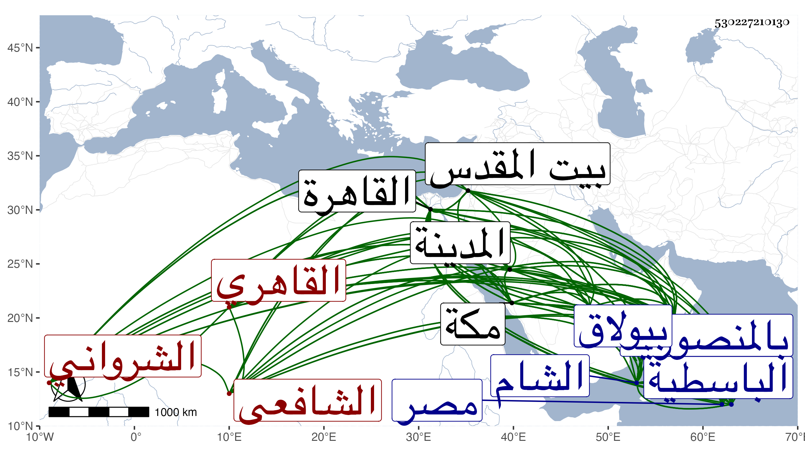

0902Sakhawi.DawLamic.ITO20230111-ara1.EIS1600.530227210130
Biography ID: 530227210130
165
محمد بن مراهم الدين الشمس الشرواني ثم القاهري الشافعي وهو منسوب لمدينة بناها أنو شروان محمود باد فأسقطوا أنو تخفيفا . ولد تقريبا سنة ثمانين وحفظ القرآن ولم يشتغل بالعلم إلا بعد العشرين فأخذ عن السيد محمد بن الشريف الجرجاني وعن القاضي زاده الرومي صاحب شرح أشكال التأسيس وكان يرجحه على الأول في الرياضيات وكذا أخذ عن عبد الرحمن القشلاغي ومحمد والركن الخافيين وهما غير الزين الخافي الشهير ويقال أن الشمس لم يكن يرتضي طريقته في التصوف ، وتقدم في الفنون ، وقدم القاهرة في سنة ثلاثين ونزل بزاوية التقي العجمي بالمصنع وكان يقول أنها لم تزل منزلا لأفاضل الغرباء حتى صارت مشيختها مضافة لعلي الخراساني المحتسب فانخفضت بل كان يحكي عن تناقص مطلق مصر أمرا عجبا فإنه قال كنت إذا كنت ماشيا بالطريق وعارضني راكب وقف حتى أمر أو أقف اختيارا مني ثم قدمت مرة فكان الراكب يعلمني لأستند ثم مرة فكان يجاوزني بدون إعلام ثم مرة فكان أهل الذمة يصدمونني . وانتمى لنصر الله الروياني وسكن معه بالمنصورية وقرأ عليه الفصوص لابن عربي خفية ثم أقرأه كذلك لبعض من يثق بكتمانه وكان يحض على إخفائه وكذا أقام بالشام وأقرأ فيهما وفي غيرهما من الأماكن واستوطن القاهرة مدة وقرئ عليه العضد وشرح الطوالع مرارا وخدمهما وغيرهما من كتبه بحواش لا يخرج فيها غالبا بالنسبة للعضد عن حاشية النفتازاني إلا ببعض من حاشية الجرجاني وكذا لا يعدو غالبا بالنسبة لشرح الطوالع حاشية شرح تجريد الأصبهاني أيضا للشريف وكذا قرئ عليه شرح المنهاج للسيد العبري وشرح العقائد للتفتازاني والمطول والمختصر وشرح المواقف واستوفاه عليه زكريا والبعض من الكشاف بل وأقرأ اليسير من شرح الحاوي للقونوي ومن شرح العمدة لابن دقيق العيد وعظمت عناية الفضلاء بالأخذ عنه وكان يحضهم على الأدب في الجلوس والنطق وغير ذلك على طريقة أبناء العجم وياقسون منه جفاء بسبب ذلك لم يألفوه من غيره وإذا غاب أحدهم عن المجيء في وقته منعه من تعويضه بالقراءة في غيره قصاصا . وممن قرأ عليه سوى من أشرت إليه أبو البركات الغراقي وابن حسان والزين طاهر والشهاب اللكوراني والتقي الحصني والمحيوي الدماطي والنجم ابن قاضي عجلون وابن أبي السعود والجوجري وآخرون منهم النجم بن حجي والزين بن مزهر والشرف بن الجيعان وعبد الحق السنباطي وابن الصيرفي وملا علي الكرماني وعبد الله الكوراني وكان ينوه به كثيرا ومن لا يحصي كثرة ، وممن حضر عنده أخي أبو بكر وكان يميل إليه ونوه به مرة في مباحثه وكذا حضرت عنده يسيرا ورام أبو الفضل المغربي حين قدم الشام والشمس إذ ذاك بها الأخذ عنه فامتنع معللا ذلك بأنه لم ير عنده أدبا وكان يقرئ مرة في الكلام فدخل عليه بعض من لا يثق بفهمه ودينه فقطع القراءة حتى انصرف وعلل ذلك بأنه قد يفهم الأمر على غير وجهه ويشهد علينا بما يقتضي أمرا مهولا ، ولما مات الشرف السبكي قرر في تدريس الفقه بالطيبرسية فعورض بالولوي الأسيوطي وتألم الشيخ لذلك ولذا فيما أظن لما عينت له مشيخة الباسطية بالقاهرة مع كونه سكنها أبى ، وكذا امتنع من تدريس التفسير بالمنصورية حين عين له عقب شيخنا فيما قيل مع حضور أبي الخير النحاس إليه بذلك وعرض عليه أن يكون له في الجوالي كل يوم دينار فامتنع وقنع بستين وبمثلها للسيد صاحبه وكذا أربى مشيخة سعيد السعداء حين عرضت عليه ومع ذلك كله فالمتمس السكنى في مكان من الجيعانية ببولاق ينشأ عنه حصر شيخ المدرسة مع كونه من جماعته فأجيب لذلك ولم يلتفت لتألم المشار إليه مع ضعفه وعجزه ، وكان إماما علامة محققا حسن التقرير لكنه في الحكمة أمهر منه في غيرها متقنا لمذهب التصوف مجيدا لكلام الغزالي كثير التحري في الطهارة معتقدا في الفقراء متواضعا معهم شهما على بني الدنيا عديم التردد إليهم خصوصا بعد وفاة المحب بن الأشقر والكمال البارزي حسن العشرة مع من يألفه ظريفا خفيف اللحية رفيع البشرة كثير المحاسن وكان يحكي عن نفسه أنه لا يميز الشخص البعيد ويطالع الخط الدقيق في الليل وأنه كان في أول أمره لا يقرأ في اليوم أكثر من درس ويطالعه قبل القراءة وبعدها ولم يكن يقرئ بدون مطالعة ويحض الطالب عليها . وقد حج وزار المدينة وبيت المقدس وفي الآخر سافر لمكة في البحر فوصلها في شوال سنة إحدى وسبعين وكنت هناك فقصدته للسلام فبالغ في الإكرام والترحيب والتلقيب بشيخ السنة وأعلم بعافية الأخ وكثرة شوقه إلي ونحو ذلك مما ابتهجت به واستمر مقيما بمكة حتى حج وجاور السنة التي تليها وأقرأ الحج من الأحياء وغير ذلك لكن يسيرا ورجع مع الركب وهو متعلل فأقام بالظاهرية القديمة أياما ثم مات في ليلة مستهل صفر سنة ثلاث وسبعين مبطونا شهيدا وقد جاز التسعين وصلى عليه من الغد ودفن بجوار الشيخ عبد الله المنوفي وتأسف الناس على فقده رحمه الله وإيانا .
